Abstract—We segment and measure cracks in 458 real photographs of concrete walls (Özgenel, Mendeley Data, CC BY 4.0) using classical image processing only. Cracks cover 1.4% of the pixels, are darker than the background and appear under shadows, low contrast and rough texture. After an image analysis on the development set we built two baselines and three pipelines of increasing sophistication, tuned them one factor at a time on development data only, and evaluated the frozen final pipeline once on a held-out test set of 137 images. The final pipeline (Gaussian smoothing, frequency-domain illumination flattening, adaptive local threshold, gap linking, closing, small-hole filling and shape-based object selection) reaches a test IoU of 0.670 ± 0.116, against 0.449 for a fixed threshold and 0.066 for Otsu with opening, and beats the fixed threshold on 131 of 137 test images. It keeps an IoU of 0.622 under Gaussian noise of σ = 30 (three seeds), reaches 0.520 on a second dataset (DeepCrack) without retuning, and runs in 0.50 s per image. The most frequent failure is false positives on rough, pitted surfaces.
I. Introduction and Problem Statement
A building-inspection engineer surveys concrete walls and slabs and needs to know where they are cracked and how much. Our pipeline takes one photograph and returns a binary crack mask, the cracked area as a percentage of the image, the crack length (pixels of the mask skeleton) and a severity class (minor / moderate / severe). A missed crack means structural damage may go unrepaired, which is a safety cost; a false crack (a stain, shadow edge or pore) wastes inspection time and lowers trust in the tool. Because cracks are only about 1.4% of the pixels, pixel accuracy is misleading: an empty mask would score 98.6%. We therefore use the IoU of the crack class as the primary metric: it ignores the easy background and penalises both missed and false crack pixels. Dice and the absolute error of the cracked-area percentage are secondary metrics.
Input: RGB JPEG photographs, 8-bit, 4032×3024 or 3264×2448, converted once to gray uint8 and resized so that the long side is L = 1008 pixels (Section II-C). Output: a bool mask at that size, its measurements and the severity class. No machine-learning model is used anywhere.
II. Dataset and Image Analysis
A. Dataset and split
The Concrete Crack Segmentation Dataset [1] has 458 photographs taken in buildings of the
Middle East Technical University, each with a binary crack mask (CC BY 4.0). The archive
(745,914,150 bytes) was downloaded with a script that checks its SHA-256 against the published
value. 437 images are 4032×3024 (either orientation) and 20 are 3264×2448; every mask
has the size of its image. The masks are stored as JPEG; we binarise them at 127 (JPEG blur touches
0.005% of pixels). Every image contains a crack. Neighbouring image IDs often show the same wall, so
we split by blocks of ten consecutive IDs (seed 42): 321 development and 137 test images,
with no block shared. All tuning used the development set; a fixed random subset of 60 development
images (the tune set) was used for the many tuning runs and the full development set for
comparisons and ablations. The test split is locked in code until a git tag
results-frozen exists.
B. Image analysis (development set)
Fig. 1 shows a typical image and three difficult ones with their intensity histograms. Crack pixels have a median gray level of 111 and background pixels 183, but the distributions overlap: a threshold of 127 keeps 59.8% of crack pixels and 3.55% of background pixels, which on 1.4% foreground means more false than true crack pixels on many images. The background estimated by a heavy blur varies by 8% (median) and up to 23% of its mean because of shadows and vignetting. The noise estimate (std of image minus its 3×3 median, away from cracks) has a median of only 3.4 gray levels. The centred spectra concentrate energy at low frequencies; a crack adds a streak perpendicular to its direction.
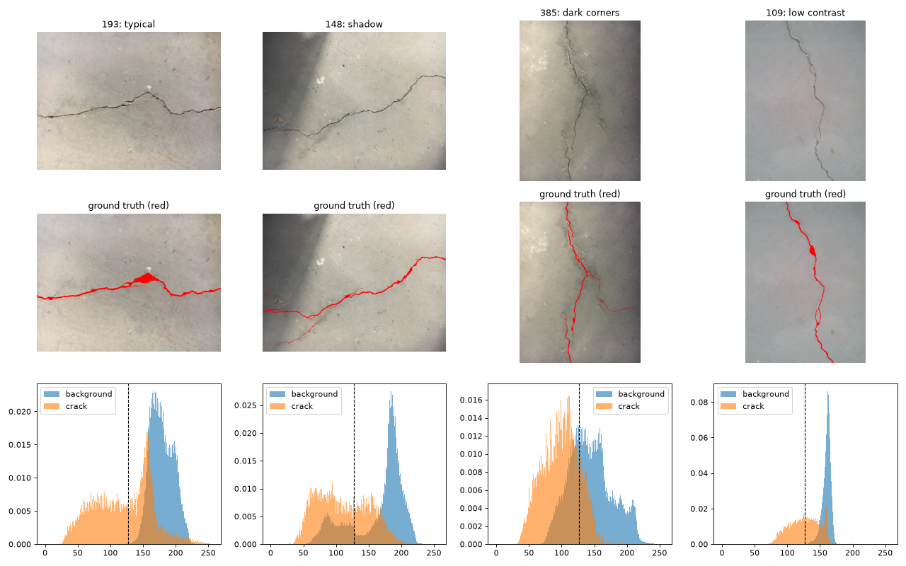
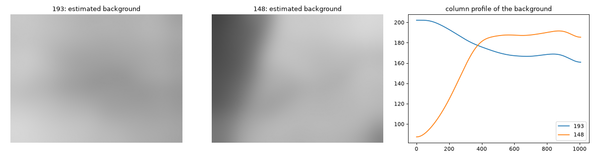
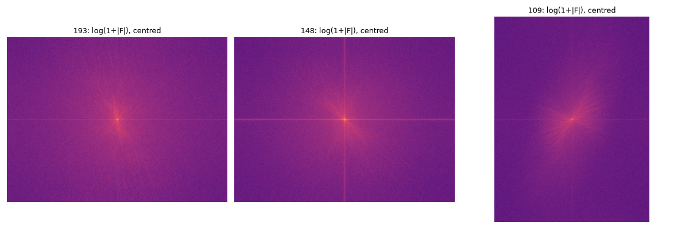
Table I · Findings and the design decisions they led to
| Finding (dev) | Decision |
|---|---|
| Cracks darker; crack/background gray levels overlap | Thresholds mark pixels below T; a single global T is not enough |
| 1.4% foreground; Otsu on raw images splits texture | IoU metric; no global histogram threshold on raw images |
| Shadows and vignetting change the background | Local (adaptive) threshold; frequency-domain flattening tested |
| Texture and pores give small dark spots | Smoothing first; object selection by area and shape last |
| Little sensor noise (3.4 gray levels) | Robustness tested with added noise |
| Resolution study (Table II) | Working size L = 1008 |
C. Resolution and gray-level study
With the trivial baseline on all 321 development images, the mean IoU is 0.434, 0.431, 0.442 and 0.454 for long sides of 4032, 2016, 1008 and 504 pixels: downsampling averages away texture and the task is still possible at 504. We chose 1008 because it is within 0.013 IoU of 504 (far below the 0.19 standard deviation over images) while keeping four times as many pixels for one-pixel-wide cracks. For gray levels, the trivial threshold is invariant to power-of-two quantisation (a bin edge always falls at 128), so we used the final pipeline: 256, 64, 32 and 16 levels give 0.666, 0.667, 0.667 and 0.665; 8 levels 0.600 and 4 levels 0.219. Sixteen gray levels is the lowest workable setting.
Table II · Resolution and gray-level study (all 321 dev images)
| Long side | IoU (trivial) | Gray levels | IoU (final) |
|---|---|---|---|
| 4032 | .434 ± .193 | 256 | .666 ± .120 |
| 2016 | .431 ± .190 | 64 / 32 | .667 / .667 |
| 1008 | .442 ± .193 | 16 | .665 ± .121 |
| 504 | .454 ± .200 | 8 / 4 | .600 / .219 |
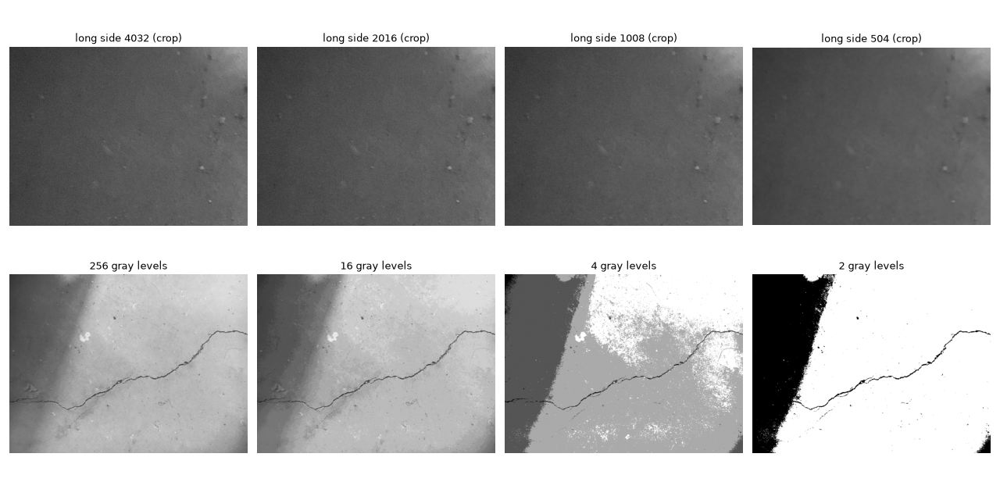
III. Methodology
A. Data preparation, metrics and baselines (MEM1)
One function, data.load_image, reads every image (BGR to gray or RGB once,
uint8, optional resize with area interpolation); masks are resized by area averaging and kept where
at least half is crack. Controlled degradation adds Gaussian, salt-and-pepper, speckle or Poisson
noise with a fixed seed. Metrics are written once and tested on hand-worked arrays:
MSE = (1/MN)Σ(f−g)² PSNR = 10 log10(255²/MSE) IoU = |A∩B| / |A∪B|
e.g. a = [[10,20],[30,40]], b = [[12,20],[30,36]] gives MSE = 20/4 = 5 and PSNR = 41.14 dB; two 3×3 masks with 2 common and 4 total pixels give IoU 0.5. Inputs are cast to float64 because uint8 subtraction wraps around (10−12 = 254). The trivial baseline is a fixed threshold at 127 on the raw gray image (crack = darker); the simple baseline is Otsu (crack ≤ T) followed by one 3×3 opening.
B. Stage implementations and their NumPy versions
Every member wrote at least two NumPy implementations and compared them with the library on a
real development image (Table III). Neighbourhood operations use reflect-101 borders
(np.pad(mode="reflect") = cv2.BORDER_REFLECT_101 = SciPy
"mirror") and correlation, as cv2.filter2D; output size is
(N−F+2P)/S+1 = N for P = (F−1)/2, S = 1. Each implementation has a
hand-worked 3×3 or 5×5 test, for example: the median of the window
[[10,12,11],[13,255,12],[11,10,0]] is 11 while its mean is 37.1 (why the median rejects impulses);
the Sobel Gy of a 10/200 step is −(10+20+10)+(200+400+200) = 760; histogram
equalisation of a 3-bit 3×3 image maps levels 0,1,2,3,7 to 2,4,5,6,7; eroding a 3×3
block with a 3×3 square leaves only its centre.
Table III · NumPy implementation vs library (dev image at L = 1008)
| Owner | Operation | Library | Max |diff| |
|---|---|---|---|
| Marwan Saber (MEM1) | block-average downsampling, PSNR | cv2.resize AREA, skimage | 0, 0 |
| Hassan Hisham (MEM2) | convolve2d 5×5 | cv2.filter2D | 5.7e-13 |
| Hassan Hisham (MEM2) | histogram equalisation; gamma | cv2.equalizeHist; skimage | 0; 0 |
| Hassan Hisham (MEM2) | Gaussian 5×5 | cv2.GaussianBlur | 1 (fixed-point) |
| Mohamed Wageh (MEM3) | median 5×5, max 3×3 | scipy.ndimage (mirror) | 0, 0 |
| Mohamed Wageh (MEM3) | centred spectrum ((−1)x+y) | np.fft.fftshift | 1.3e-11 |
| Saad Mohamed (MEM4) | Sobel magnitude; Otsu | cv2.Sobel; skimage | 0; 0 |
| Saad Mohamed (MEM4) | adaptive mean 31/15 | cv2.adaptiveThreshold | 0.048% pixels |
| Ahmed Abdelwahed (MEM5) | erosion disk 5; hole filling | cv2.erode; binary_fill_holes | 0; 0 |
| Ahmed Abdelwahed (MEM5) | labelling (object count) | skimage.measure.label | 0 |
The remaining differences are explained: OpenCV's 8-bit Gaussian uses fixed-point arithmetic,
and adaptiveThreshold rounds the local mean to an integer before comparing.
Table IV · Hand-worked examples checked by the unit tests
| Owner | Input | Operation | Result |
|---|---|---|---|
| Marwan Saber (MEM1) | a=[[10,20],[30,40]], b=[[12,20],[30,36]] | MSE, PSNR | 5.0, 41.14 dB |
| Marwan Saber (MEM1) | [[0,2,8,10],[4,6,12,14]] | 2×2 block average | [[3,11]] |
| Hassan Hisham (MEM2) | r = 15; r = 64 | log (c = 255/ln 256); gamma 0.5 | 128; 128 |
| Hassan Hisham (MEM2) | 3-bit [[0,0,1],[1,1,2],[2,3,7]] | histogram equalisation | 0,1,2,3,7→2,4,5,6,7 |
| Mohamed Wageh (MEM3) | [[10,12,11],[13,255,12],[11,10,0]] | median / mean / midpoint / α-trim d=2 | 11 / 37 / 128 / 11 |
| Mohamed Wageh (MEM3) | D = D0 | ideal / Butterworth / Gaussian H | 1 / 0.5 / 0.607 |
| Mohamed Wageh (MEM3) | row [0,0,0,1,1,0] | run-length runs | (0,3),(1,2),(0,1) |
| Saad Mohamed (MEM4) | [[10,10,10],[10,10,10],[200,200,200]] | Sobel Gx, Gy; Prewitt Gy | 0, 760; 570 |
| Ahmed Abdelwahed (MEM5) | 3×3 block inside 5×5 | erosion, then opening (3×3 square) | centre only; block |
Enhancement (MEM2): negative, log, gamma, contrast stretching, histogram equalisation,
mean/Gaussian/median smoothing, Laplacian sharpening (g = f−∇²f) and the
Gonzalez–Woods combined method [2] in which a smoothed, normalised Sobel magnitude weights the
Laplacian detail. Restoration and frequency (MEM3): arithmetic, geometric, harmonic and
contraharmonic means; median, max, min, midpoint and alpha-trimmed filters; a naive matrix DFT
checked against np.fft; ideal, Butterworth (n = 2) and Gaussian transfer
functions applied on a 2× reflect-padded grid with (−1)x+y centring.
Segmentation (MEM4): Roberts, Prewitt, Sobel, Laplacian, LoG with zero crossings, point and
dark-line masks, iterative global, Otsu
(σB² = (μTω−μ)²/(ω(1−ω))) and
adaptive thresholds via an integral image, gap linking and a Hough accumulator identical to
scikit-image. Morphology (MEM5): erosion and dilation with square, disk, cross and line
elements (outside = 1 for erosion as in OpenCV), opening, closing, border-seeded hole
filling, run-based two-pass labelling with union-find, area, bounding box, perimeter and
circularity 4πA/P².
C. Pipelines A, B and C
Pipeline A is spatial enhancement plus a global threshold. Pipeline B adds illumination flattening (division by the low-frequency background) and a local adaptive threshold that follows shadows, then links gaps of up to three pixels along rows and columns. Pipeline C adds morphological refinement: a small closing bridges broken cracks, filling only holes up to 30 pixels avoids turning concrete enclosed by crossing cracks into crack, and object selection keeps long, thin components (cracks have low circularity; stains and pores are round). Every parameter was chosen by a study (Section IV); for example the adaptive offset c = 15 balances missed faint cracks (c = 10 lets texture through, c = 25 drops faint branches), and the 31-pixel block is several crack widths wide yet smaller than a shadow edge.
Table IX · Final stages, parameters and the evidence behind them
| Stage | Value | Why (evidence) |
|---|---|---|
| Working size | long side 1008 | within noise of the best size, keeps thin cracks (Table II) |
| Gaussian smoothing | 7×7 (OpenCV σ rule) | suppresses texture; median erases thin lines (Fig. 8) |
| Illumination flattening | Gaussian LP, D0 = 12 (2× padded) | D0 12 vs 6/24 within noise; helps shadowed images (AB6) |
| Threshold | adaptive mean, block 31, c 15 | best block and c (Table V); Otsu −0.098 (AB3) |
| Edge linking | gaps ≤ 3 px | 6 px within noise; 10 px joins texture (study) |
| Closing | disk 3 | disk ≥ square; larger SE within noise (Fig. 9) |
| Small-hole filling | ≤ 30 px | fills pores inside wide cracks, keeps enclosed concrete |
| Object selection | area ≥ 60, circularity ≤ 0.5 | area 30–60 equal, 240 drops branches; circularity 0.3/0.8 worse |
| Severity cut-offs | 1.0 % / 1.37 % | tertiles of dev ground-truth cracked area |
IV. Experiments
A. Setup
All runs are logged to experiments/experiment_log.csv (run id, date, author,
pipeline, stage, method, parameters, seed, split, number of images, time, metric). Studies change one
factor of a reference configuration; tuning ran in two rounds, the second starting from the best
configuration of the first. Python 3.13, NumPy 2.5, OpenCV 5.0; 157 unit tests run in CI on
Python 3.12 and 3.13.
B. One-factor-at-a-time studies (tune set, 60 images)
Table V · Parameter studies (mean IoU)
| Factor (owner) | Values → IoU |
|---|---|
| Kernel size (MEM2) | Gaussian 3/5/7: .656/.679/.671; mean 3/5/7: .671/.658/.591; median 3/5/7: .614/.574/.469; none .528 |
| Cutoff D0 (MEM3) | 6: .674; 12: .671; 24: .661; no flattening .670 |
| Threshold method (MEM4) | Otsu* .489; fixed 127/115/100: .473/.421/.335; LoG .425; line masks .316; adaptive Gaussian .296; adaptive mean .258 (*after flattening, no morphology) |
| Adaptive block / c (MEM4) | block 15/31/61: .573/.671/.664; c 10/15/20/25: .640/.671/.634/.571 |
| SE size, shape (MEM5) | disk 3/5/7: .671/.677/.680; square 3/5/7: .669/.673/.672; none .668 |
| Detector (MEM4) | Prewitt .291, Sobel .291, Roberts .284, LoG .256, lines .234, Laplacian .205 |
Two findings shaped the design. First, the ranking of threshold methods depends on what follows: without morphology, Otsu on the flattened image beats the adaptive threshold (0.489 vs 0.258) because adaptive marks texture everywhere; inside Pipeline C, whose morphology removes that texture, adaptive with c = 15 wins (0.671 vs 0.501). Second, edge detectors (Table V) mark both borders of a crack rather than its body and stay far below region thresholds; the plain Laplacian is worst because the second derivative amplifies noise. Median smoothing is the worst smoother here: it removes thin dark lines it treats as impulses. Round-2 differences were below the tune-set standard error (≈0.014), and combining all round-2 winners scored lower on the full development set (0.643) than the round-2 reference (0.666), which we therefore kept.
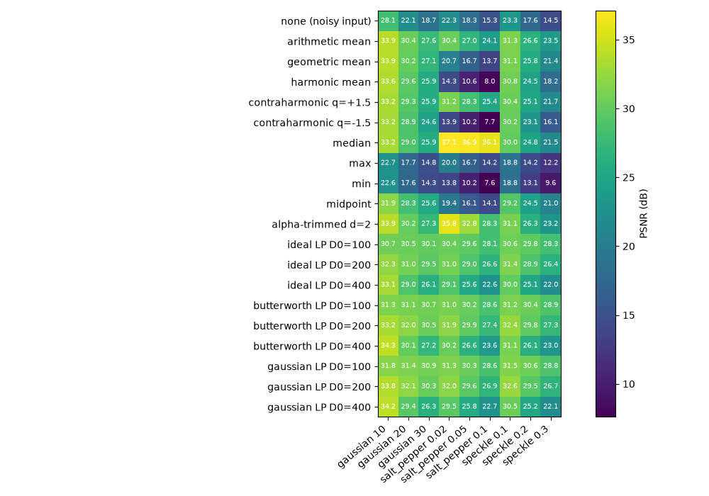
Table X · Restoration: PSNR (dB) of selected filters (k = 3)
| Filter | Gauss 10 | Gauss 30 | S&P .02 | S&P .10 | Speckle .2 |
|---|---|---|---|---|---|
| noisy input | 28.1 | 18.7 | 22.3 | 15.3 | 17.6 |
| arithmetic mean | 33.9 | 27.6 | 30.4 | 24.1 | 26.6 |
| median | 33.2 | 25.9 | 37.1 | 36.1 | 24.8 |
| alpha-trimmed d=2 | 33.9 | 27.3 | 35.8 | 28.3 | 26.3 |
| midpoint | 31.9 | 25.6 | 19.4 | 14.1 | 24.5 |
| contraharmonic Q=+1.5 | 33.2 | 25.9 | 31.2 | 25.4 | 25.1 |
| Gaussian LP, D0=200 | 33.8 | 30.3 | 32.0 | 26.9 | 29.5 |
| best of all filters | 34.3 (BW LP 400) | 30.9 (G LP 100) | 37.1 (median) | 36.1 (median) | 30.6 (G LP 100) |
Max and min filters remove only one polarity of impulse and darken or brighten the image, so they lose against the median on salt-and-pepper noise; the contraharmonic filter needs the sign of Q to match the impulse polarity (Q > 0 removes pepper). For Gaussian and speckle noise the frequency-domain low-pass filters win because their cutoff can be set wider than a 3×3 window; the spatial vs frequency comparison is completed by ablation AB2 inside the segmentation pipeline, where the spatial Gaussian wins by 0.017 IoU.
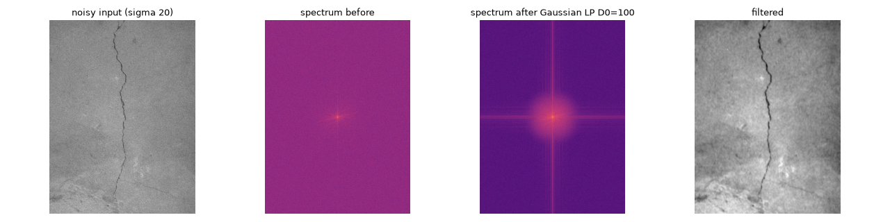
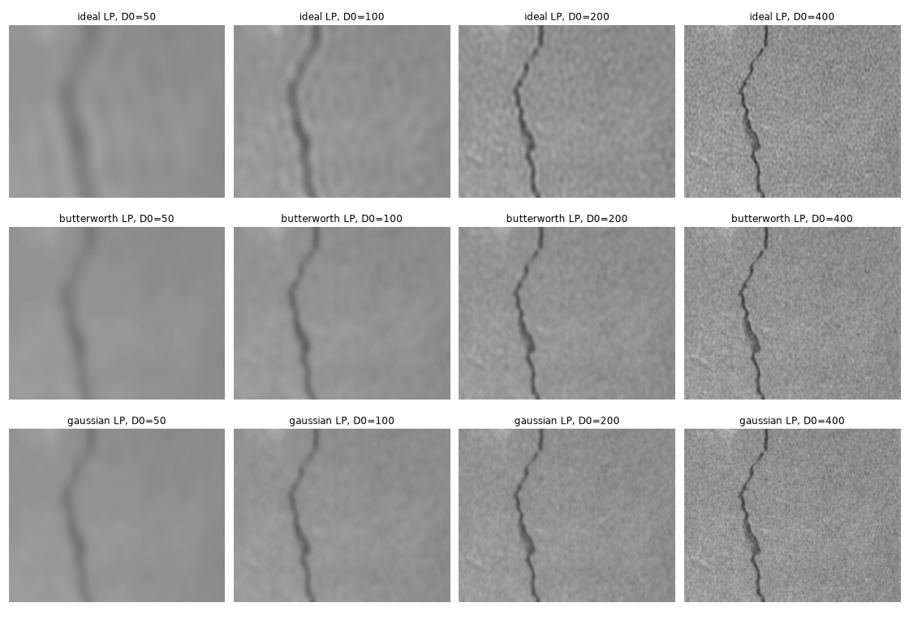

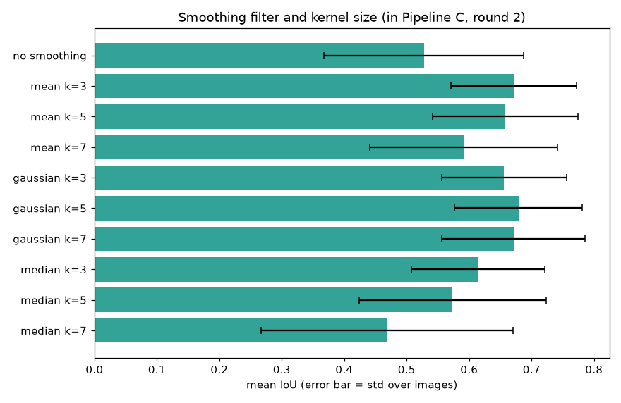
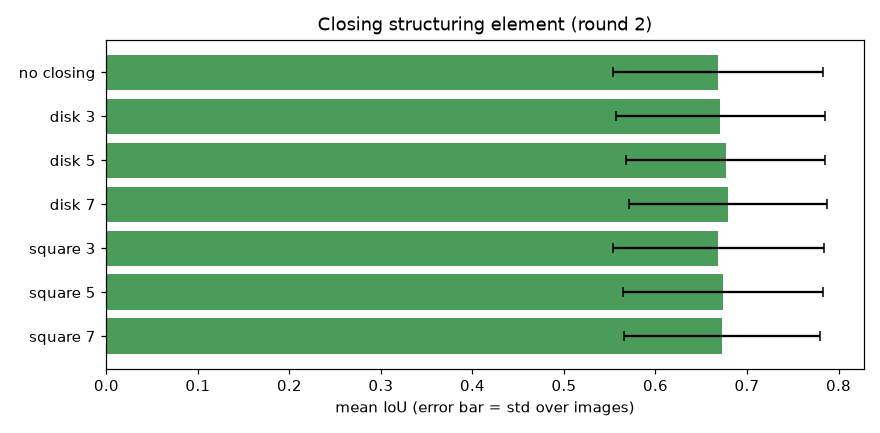
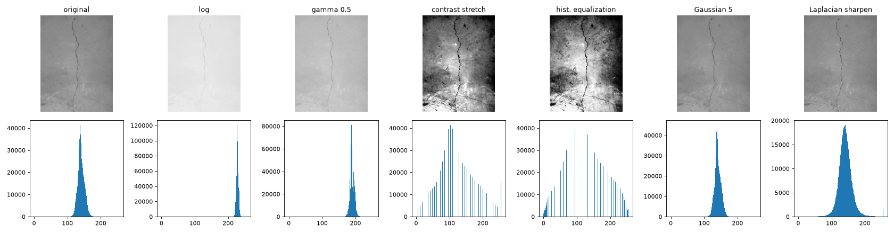
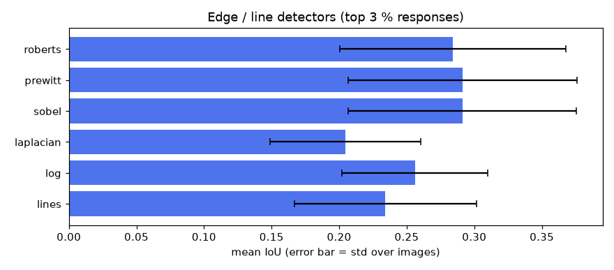
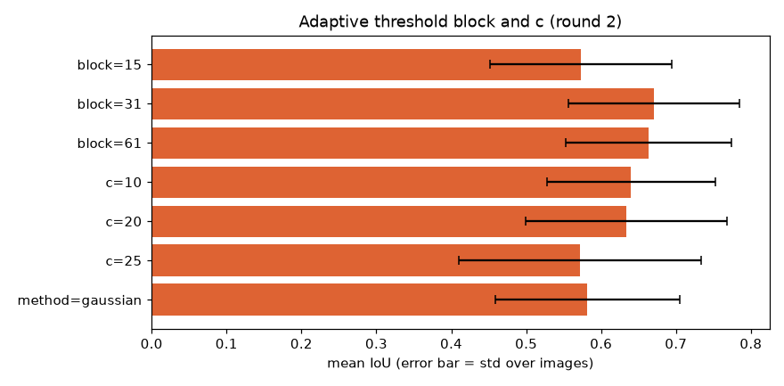
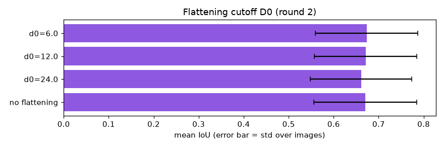
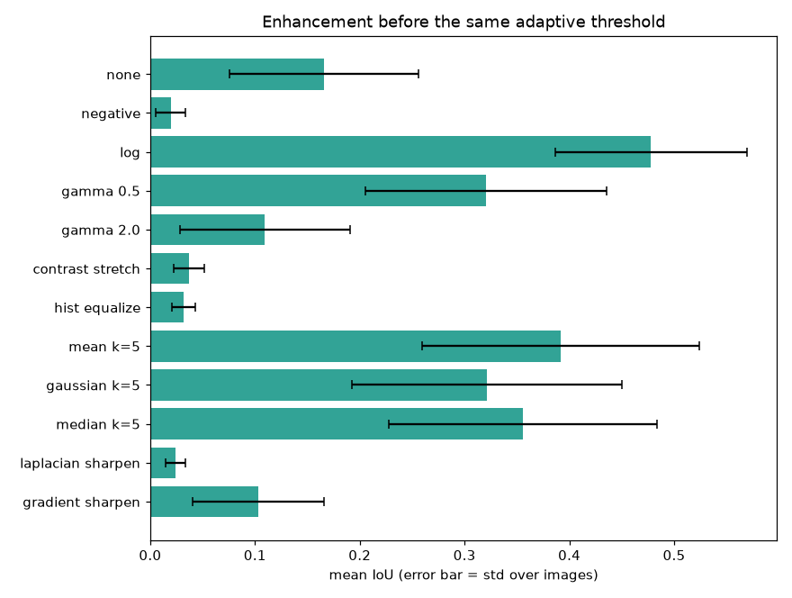
For enhancement (MEM2), each method was placed in front of the same adaptive threshold: log (0.478), mean 5 (0.392), median 5 (0.356), Gaussian 5 (0.322) and gamma 0.5 (0.320) help compared with no enhancement (0.166), whereas gamma 2.0, gradient sharpening, contrast stretching, histogram equalisation, Laplacian sharpening and the negative make it worse. Equalisation and stretching spread the bright background over the whole range and amplify texture; the negative turns cracks bright so a dark-crack threshold finds the background.
C. Ablation studies (all 321 dev images)
Table VI · Ablations of the final pipeline
| Change | IoU | Δ |
|---|---|---|
| Final pipeline | .6657 | — |
| AB1 no enhancement (no smoothing, no flattening) | .5100 | −.156 |
| AB2 frequency low-pass instead of spatial Gaussian | .6486 | −.017 |
| AB3 global Otsu instead of adaptive | .5681 | −.098 |
| AB4a no morphology / selection (= Pipeline B) | .5118 | −.154 |
| AB4b opening before closing | .6410 | −.025 |
| AB5 no edge linking | .6620 | −.004 |
| AB6 no illumination flattening | .6626 | −.003 |

Smoothing and morphology carry most of the gain. Opening before closing deletes thin crack segments before they can be joined. Flattening and linking add little once the threshold is local: the adaptive threshold already follows the illumination, so AB6 makes the pipeline five times faster for −0.003 IoU; we keep it because it was selected on the development set and is the stage that helps most on strongly shadowed images.
V. Results and Failure Analysis
A. Held-out test set (137 images, evaluated once)
Table VII · IoU on the development and test sets
| Method | Dev (321) | Test (137) | Test min / max |
|---|---|---|---|
| Trivial baseline | .442 ± .193 | .449 ± .189 | .017 / .843 |
| Simple baseline | .066 ± .144 | .066 ± .140 | .010 / .816 |
| Pipeline A | .458 ± .238 | .443 ± .243 | .009 / .878 |
| Pipeline B | .512 ± .129 | .513 ± .139 | .187 / .781 |
| Pipeline C (final) | .666 ± .120 | .670 ± .116 | .330 / .881 |
Development and test results agree within 0.004 for the final pipeline, so the tuning did not overfit the development data. The final pipeline beats the trivial baseline on 131 of 137 test images; the best test image (174) reaches 0.881 and the worst (249) 0.330. Pipeline A does not beat the trivial baseline on the test set (0.443 vs 0.449): a single global threshold, even after smoothing, cannot follow illumination. The simple baseline fails because Otsu on a histogram with 1.4% foreground splits the background texture into two classes. Measurements on the test set: the cracked-area percentage has a mean absolute error of 0.33 points (ground-truth mean 1.41%), the skeleton length a relative error of 18.6%, and the severity class agrees with the class computed from the ground truth on 62.8% of images; errors concentrate in the narrow "moderate" band (1.0–1.37%). Under added Gaussian noise (three seeds per level) the dev IoU is 0.662, 0.650 and 0.622 for σ = 10, 20, 30, with a standard deviation over seeds of at most 0.0007.
Table XI · Severity class on the test set (rows: from GT, columns: predicted)
| minor | moderate | severe | |
|---|---|---|---|
| minor (38) | 33 | 5 | 0 |
| moderate (39) | 22 | 15 | 2 |
| severe (60) | 1 | 21 | 38 |
Most severity errors move one class down: the pipeline tends to under-estimate the area of cracks whose masks are wide, and the moderate band is only 0.37 percentage points wide. Gross errors (minor ↔ severe) occur on one image.
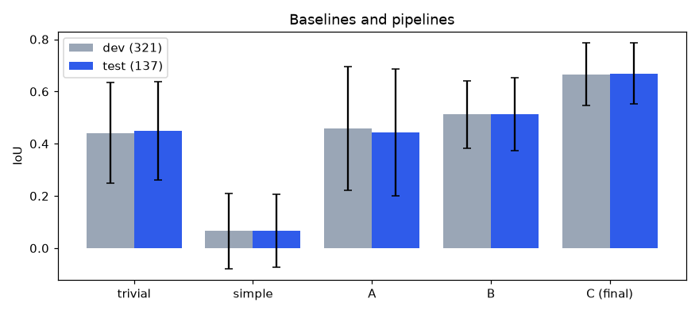
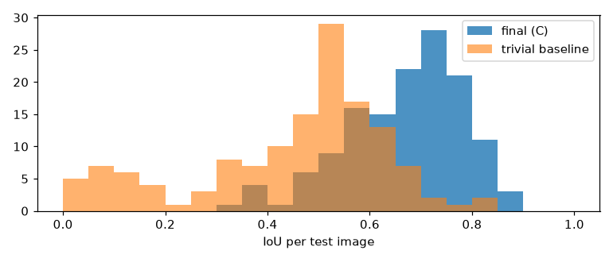

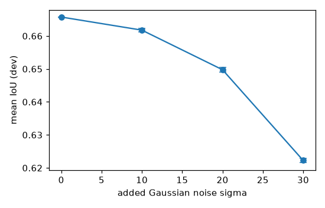
B. Failure analysis (20 worst test images)
We inspected the 20 worst test images with every intermediate stage (Fig. 16) and grouped them by a written rule on their measurements, checked visually. Rough texture and pits (9 images): dark pores pass the adaptive threshold and many elongated fragments survive selection; responsible stages are the threshold and object selection. Faint thin branches missed (6): hairline branches are within 15 gray levels of their surroundings and are rejected by c = 15 or by the 60-pixel area limit. Wide cracks and spalling (4): the adaptive threshold marks only the edges of damage wider than its 31-pixel block, because inside such a region the local mean is dark too. Boundary width (1): the ground truth is wider than the visible crack. We proposed and tested two fixes on the development set (not on the test set): adding a global Otsu mask for wide cracks lowered IoU to 0.602 (it also catches dark background), and a stricter object selection (area ≥ 120, circularity ≤ 0.3) gave 0.661, so neither replaced the frozen pipeline. A more promising fix for the most common failure is a texture measure (local variance) computed before thresholding, to raise c only on rough surfaces.
Table XII · Failure categories among the 20 worst test images
| Category | n | Responsible stage | Why | Proposed fix |
|---|---|---|---|---|
| Rough texture / pits | 9 | adaptive threshold, selection | dark pores are below the local mean; elongated fragments pass the shape test | texture-dependent c (local variance) |
| Faint branches missed | 6 | adaptive threshold (c), area filter | hairlines within 15 gray levels; short pieces < 60 px removed | hysteresis: grow from strong cracks into weak pixels |
| Wide cracks / spalling | 4 | adaptive threshold (block) | inside a region wider than 31 px the local mean is dark too | reconstruct the interior from detected edges |
| GT wider than crack | 1 | ground truth | annotation includes margins | report Dice / tolerant IoU |

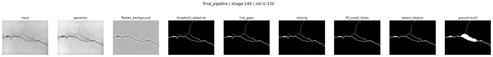
VI. Deployment and Bonus Work
python -m src.run_pipeline --image photo.jpg applies the frozen configuration
(configs/final_pipeline.yaml) and writes the mask, a red overlay and a JSON file with the
measurements, severity and time per stage; app/app.py is a Gradio demo that shows every
stage and handles invalid files. Speed (Bonus 5): profiling showed the FFT of the flattening
stage and the iterative hole filling as bottlenecks; a real-input FFT (valid because the transfer
function is symmetric) and hole filling by one background labelling reduced the time from 0.922 to
0.502 s per image (1.84×) with identical masks; vectorised object selection had already
removed a 2.9 s bottleneck. The 137 test images take about 1.4 minutes locally.
Compression (Bonus 4): run-length coding of the final masks gives a mean ratio of 441 (PNG:
164) and canonical Huffman coding of the gray images 1.36 (PNG: 1.93, because PNG also exploits
neighbour correlation); every decoded output equals its input. Generalization (Bonus 3): the
frozen pipeline on the 237 DeepCrack test images [3] (pavement, 544×384, no retuning) reaches
IoU 0.520 against 0.346 for the trivial baseline; the drop is explained by the different scale and
surface. Tests and CI (Bonus 2): 157 pytest tests, including every hand example and library
comparison, run on every push.
Table XIII · Bonus results
| Bonus | Measurement | Result |
|---|---|---|
| Speed (B5) | final pipeline, s/img (20 dev images) | 0.922 → 0.502 (1.84×), identical masks |
| Speed (B5) | flattening; hole filling | 0.621 → 0.375; 0.185 → 0.031 |
| Compression (B4) | RLE on masks; Huffman on gray | ratio 440.7; 1.36 (all exact) |
| Generalization (B3) | DeepCrack test, 237 images | IoU 0.520 (trivial 0.346) |
| Tests / CI (B2) | pytest on push and PR | 157 tests, Python 3.12 and 3.13 |
| Public demo (B1) | Gradio app | runs locally; public hosting pending |
VII. Limitations, Ethics and Future Work
IoU is limited by the ground truth, whose masks are often wider than the visible crack and include blobs; one-pixel offsets on thin cracks cost much IoU. Parameters are tied to the image scale (block 31, area 60 at L = 1008), as the DeepCrack result shows. The severity cut-offs are tertiles of this dataset, not engineering thresholds, and lengths are in pixels because the images have no physical scale. The photographs show building surfaces only and contain no personal data. This is a course project and not a certified inspection tool: a missed crack must never be read as "no damage". Future work: texture-adaptive thresholds, scale normalisation from the crack width, and morphological reconstruction to recover wide cracks from their detected edges.
VIII. Team Contributions and AI Assistance
Table VIII · Contribution table
| Member | Work package | Files | Experiments |
|---|---|---|---|
| Marwan Saber (MEM1) | Lead, data, metrics, baselines, integration | data, metrics, pipeline, studies, configs | resolution, gray levels, baselines, final selection, robustness, test |
| Hassan Hisham (MEM2) | Enhancement | enhancement.py | enhancement methods, kernel size |
| Mohamed Wageh (MEM3) | Restoration, frequency, compression | restoration.py, frequency.py, bonus/compression | PSNR study, D0, AB2 |
| Saad Mohamed (MEM4) | Segmentation | segmentation.py | threshold methods, detectors, adaptive |
| Ahmed Abdelwahed (MEM5) | Morphology, evaluation, demo | morphology.py, evaluate.py, run_pipeline.py, app | SE size/shape, failure analysis |
Disclosure of AI assistance. An AI coding assistant (Claude Code) was used to draft the planning documents, much of the code in every module and its tests, the experiment scripts and this report. All code was committed from team accounts with the assistant named as co-author in each commit message, every number in this report comes from the CSV files in the repository, and each member has reviewed and must be able to explain their own work package and the whole pipeline.
References
- Ç. F. Özgenel, "Concrete Crack Segmentation Dataset," Mendeley Data, v1, 2019, doi:10.17632/jwsn7tfbrp.1. CC BY 4.0.
- R. C. Gonzalez and R. E. Woods, Digital Image Processing, 4th ed. Pearson, 2018.
- Y. Liu, J. Yao, X. Lu, R. Xie, L. Li, "DeepCrack: A deep hierarchical feature learning architecture for crack segmentation," Neurocomputing, vol. 338, pp. 139–153, 2019.
- N. Otsu, "A threshold selection method from gray-level histograms," IEEE Trans. Syst., Man, Cybern., vol. 9, no. 1, pp. 62–66, 1979.
- C. R. Harris et al., "Array programming with NumPy," Nature 585, 357–362, 2020; G. Bradski, "The OpenCV Library," Dr. Dobb's J., 2000; S. van der Walt et al., "scikit-image," PeerJ 2:e453, 2014; P. Virtanen et al., "SciPy 1.0," Nat. Methods 17, 261–272, 2020.